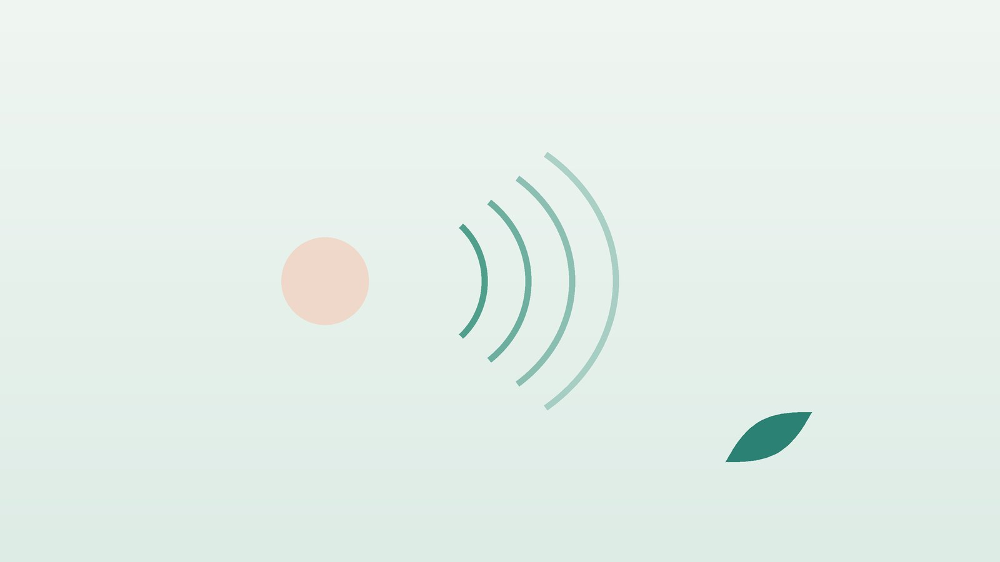

건강 칼럼 · 인천 만성기침 한의원
기침이 두 달째 멈추지 않는다면, 만성기침·후비루 한방 치료

나의 기침, 이런 모습인가요?
- 기침이 8주 넘게 이어지고 있다
- 목 뒤로 콧물이나 가래가 넘어가는 느낌이 있어 자꾸 헛기침을 한다
- 찬 공기, 말을 많이 할 때, 밤이나 새벽에 기침이 심해진다
- 속쓰림, 신물, 식후 기침이나 목에 무언가 걸린 느낌이 있다
- 혈압약을 바꾼 뒤부터 마른기침이 시작됐다
- 기침 때문에 잠을 깨거나 소변이 새는 일이 있다
이 체크리스트는 진단 도구가 아니라 상담이 필요한지 가늠해 보는 참고용입니다.
기침은 왜 이렇게 오래가나요?
기침은 기도에 들어온 이물질을 밀어내는 방어 반응이지만, 원인이 계속 남아 있거나 기도 신경이 예민해지면 멈추지 않습니다. 성인 기준으로 3주 이내는 급성, 3~8주는 아급성, 8주 이상은 만성기침으로 나누며, 감기 뒤 기침은 대개 3~8주 사이에 저절로 좋아집니다. 미국흉부의사협회(ACCP)와 유럽호흡기학회(ERS) 지침, 대한결핵및호흡기학회 기침 진료지침은 공통적으로 흡연자가 아니고 흉부 X선이 정상인 만성기침의 흔한 원인으로 후비루, 천식, 위식도역류를 꼽습니다.
원인이 하나가 아니라 두세 가지가 겹친 경우도 많아, 한 가지 치료로 좋아지지 않았다고 끝내지 않고 순서대로 확인하는 것이 중요합니다. 또 고혈압이나 심부전에 쓰는 ACE 억제제(이름이 '-프릴'로 끝나는 약)는 복용자 일부에서 마른기침을 일으키는데, 이때는 약을 바꾼 뒤 보통 몇 주 안에 기침이 줄지만 길게는 석 달 가까이 걸리기도 합니다. 임의로 끊지 말고 처방한 의사와 다른 계열로 바꾸는 것을 상의하세요.
흉부 X선과 호흡기내과 진료가 먼저인 신호
- 피가 섞인 가래나 객혈이 있다
- 의도하지 않은 체중 감소, 밤에 옷이 젖을 만큼 땀이 난다
- 2주 넘게 열이 나거나 기침이 계속된다(결핵 검사 권장)
- 오래 담배를 피웠거나 피우는데 기침 양상이 달라졌다
- 숨이 차서 계단을 오르기 힘들거나 쌕쌕거린다
- 목소리가 쉰 채 3주 이상 돌아오지 않는다
우리나라는 결핵이 여전히 드물지 않아 질병관리청은 2주 이상 기침이 이어지면 결핵 검사를 받도록 안내합니다. 흡연력이 있는 분의 오래가는 기침, 객혈, 체중 감소는 폐암 확인이 필요하므로 한방 치료보다 영상 검사가 먼저입니다. 갑자기 숨이 차고 입술이 파래지면 응급실로 가세요.
한의학은 오래가는 기침을 어떻게 보나요?
한의학에서는 소리만 나는 것을 해(咳), 가래가 함께 나오는 것을 수(嗽)라 하여 둘을 합쳐 해수(咳嗽)라 불렀습니다. 『황제내경』 소문 해론(咳論)에는 '오장육부가 모두 사람으로 하여금 기침하게 하니, 폐만의 문제가 아니다(五臟六腑皆令人咳 非獨肺也)'라는 구절이 있습니다. 후비루는 코, 역류는 위장, 천식은 폐와 체질이 얽혀 있다는 현대의 시각과도 맞닿아 있는 관점입니다.
만성기침에서 한의학이 특히 주목하는 것은 진액(津液)의 상태입니다. 콧물과 가래가 많고 묽으면 찬 기운과 수분 정체를, 끈적하고 누런 가래가 목에 붙으면 열과 담을, 가래 없이 목이 마르고 간질거리면 진액이 말라 기도가 예민해진 상태를 의심합니다. 또 목에 무언가 걸린 듯하면서 신물이 오르는 기침은 위장의 기운이 아래로 내려가지 못하고 거슬러 오르는 것으로 봅니다.
나의 기침은 어떤 유형일까?
1. 풍한음정(風寒飮停) 맑은 콧물이 넘어가는 유형
- 이런 분에게 많아요
- 찬 바람에 코가 먼저 반응하는 분, 비염이 있는 분
- 나타나는 모습
- 묽은 콧물이 목 뒤로 넘어가며 아침에 기침이 잦다
- 함께 오는 몸의 신호
- 재채기, 코막힘, 찬 것을 싫어함
- 진찰에서 보이는 모습
- 설태가 희고 촉촉하며 맥이 얕게 잡힘
- 치료 방향
- 찬 기운을 흩고 묽은 담음을 말리는 방향 (소청룡탕 계열)
- 오늘부터 해 볼 것
- 외출할 때 마스크로 코와 목을 덮어 찬 공기를 데우세요.
2. 담열(痰熱) 누런 가래가 붙는 유형
- 이런 분에게 많아요
- 부비동염이 잦거나 술·매운 음식을 즐기는 분
- 나타나는 모습
- 끈적하고 누런 가래가 목에 걸려 헛기침이 잦다
- 함께 오는 몸의 신호
- 입 마름, 코 냄새, 목의 열감
- 진찰에서 보이는 모습
- 혀가 붉고 설태가 누렇고 두꺼움
- 치료 방향
- 열을 식히고 가래를 삭이는 방향 (청금화담탕 계열)
- 오늘부터 해 볼 것
- 따뜻한 물을 자주 마셔 가래를 묽게 하세요.
3. 폐음허(肺陰虛) 마른 기침이 간질거리는 유형
- 이런 분에게 많아요
- 말을 많이 하는 직업, 건조한 실내에서 지내는 분
- 나타나는 모습
- 가래 없이 목이 간질거리고 밤에 마른기침이 심하다
- 함께 오는 몸의 신호
- 목소리 쉼, 입과 목 건조, 손발 열감
- 진찰에서 보이는 모습
- 혀가 붉고 마른 편이며 설태가 거의 없음
- 치료 방향
- 진액을 보태 기도를 촉촉하게 하는 방향 (맥문동탕 계열)
- 오늘부터 해 볼 것
- 실내 습도를 40~60%로 맞추고 말하는 중간중간 물을 머금으세요.
4. 간위기역(肝胃氣逆) 신물과 함께 오르는 유형
- 이런 분에게 많아요
- 야식, 커피, 스트레스가 많은 분
- 나타나는 모습
- 식후나 누웠을 때 기침이 나고 목에 무언가 걸린 느낌이 있다
- 함께 오는 몸의 신호
- 속쓰림, 트림, 가슴 답답함
- 진찰에서 보이는 모습
- 혀 양옆이 붉고 맥이 활시위처럼 당겨짐
- 치료 방향
- 위로 치미는 기운을 내리고 위장을 편하게 하는 방향 (반하후박탕 계열)
- 오늘부터 해 볼 것
- 잠들기 3시간 전부터는 먹지 마세요.
한의원에서는 어떻게 진찰하나요?
- 검사 결과 확인: 흉부 X선, 폐기능 검사, 내시경 등 이미 받은 검사와 진단을 확인합니다.
- 기침 양상: 시작 시점, 하루 중 심한 시간, 가래의 색과 양, 콧물이 넘어가는지 여쭙니다.
- 약과 생활: 혈압약 종류, 흡연, 직업 환경, 식사 시간을 확인합니다.
- 설진·맥진: 찬 기운, 열, 건조, 거슬러 오르는 기운의 비중으로 유형을 정합니다.
침·약침·한약 치료는 어떻게 하나요?
1. 침 치료
등의 셋째 등뼈 아래에서 양옆으로 손가락 두 마디쯤 떨어진 폐수(肺兪), 팔꿈치 안쪽 주름에서 굵은 힘줄 바깥 오목한 곳의 척택(尺澤), 손목 엄지 쪽 뼈 돌기 위의 열결(列缺)을 기본으로 씁니다. 후비루가 있으면 콧방울 바로 옆의 영향(迎香)을, 역류가 의심되면 명치와 배꼽 사이 가운데의 중완(中脘)과 손목 안쪽의 내관(內關)을 더합니다.
침 치료가 만성기침에 도움이 되었다는 연구가 있지만 규모가 작고 방법이 제각각이어서, 기침 횟수와 수면 상태를 기록하며 효과를 확인해 갑니다.
2. 약침
기침이 오래가면서 굳은 등과 목, 가슴 주변 근육에 약침을 적용해 기침할 때 울리는 통증과 결림을 덜 수 있습니다.
3. 한약
유형별 처방으로 콧물과 가래, 목의 건조함, 위장의 역류 경향을 함께 다스립니다. 마황이 들어간 처방은 심장 질환이나 고혈압, 불면이 있는 분에게 신중히 쓰므로 지병과 복용 약을 꼭 알려 주세요.
원장님이 네이버 블로그에 진료 이야기와 건강 정보를 꾸준히 올리고 있습니다. 더 많은 이야기는 블로그에서 확인해 보세요.
블로그 보기치료는 어떤 순서로 진행되나요?
- 원인 확인 흉부 X선을 포함한 검사로 결핵·폐암 등을 배제하고 약물 원인을 점검합니다.
- 첫 한방 진료 기침 유형을 정하고 기침 일지와 생활 조정을 안내합니다.
- 2~4주 주 1~2회 침 치료와 한약으로 가래, 후비루, 기도 예민함을 살핍니다.
- 마무리 기침이 줄면 간격을 늘리고, 계절 변화나 감기 뒤 재발에 대비합니다.
원인이 여러 개 겹친 경우 호흡기내과, 이비인후과, 소화기내과 치료와 함께 진행하며, 기간은 진찰 후 안내합니다.
기침을 덜 부르는 생활 관리
- 코 세척: 후비루가 있다면 생리식염수 코 세척으로 분비물을 줄여 보세요.
- 금연과 간접흡연 피하기: 담배 연기는 기도를 가장 직접적으로 자극하는 원인입니다.
- 늦은 식사 줄이기: 역류가 의심되면 야식, 과식, 커피와 탄산음료를 줄이고 베개를 조금 높입니다.
- 습도와 물: 건조한 계절에는 가습과 수분 섭취로 기도 점막을 지킵니다.
- 헛기침 참기: 습관적인 헛기침은 목을 더 자극하니 물 한 모금이나 침 삼키기로 바꿔 보세요.
다른 진료가 함께 필요한 경우
- 쌕쌕거림이나 숨참이 있으면 호흡기내과에서 폐기능 검사와 천식 확인을 받으세요.
- 코막힘과 누런 콧물이 계속되면 이비인후과에서 부비동염을 확인하세요.
- 속쓰림과 신물이 잦으면 소화기내과 진료를 함께 받으세요.
- ACE 억제제를 드신다면 처방 의사와 다른 혈압약으로 바꿀지 상의하세요.
자주 묻는 질문 Q&A
- Q1. 기침이 얼마나 오래가면 병원에 가야 하나요?
- 8주 이상이면 만성기침으로 보며, 2주 이상이면 결핵 검사를 권합니다.
- Q2. X선이 정상이면 안심해도 되나요?
- 큰 병은 상당 부분 배제되지만 후비루, 천식, 역류 같은 원인은 따로 확인해야 합니다.
- Q3. 혈압약 때문에 기침할 수 있나요?
- ACE 억제제는 마른기침을 일으킬 수 있습니다. 끊지 말고 처방 의사와 상의하세요.
- Q4. 후비루는 어떻게 알 수 있나요?
- 목 뒤로 무언가 넘어가는 느낌, 잦은 헛기침, 아침 가래가 대표적입니다.
- Q5. 기침약을 먹어도 낫지 않아요.
- 원인을 다루지 않으면 기침약만으로는 한계가 있어 원인 확인이 먼저입니다.
- Q6. 침과 한약을 양약과 함께 써도 되나요?
- 함께 쓸 수 있으며 복용 중인 약을 알려 주시면 처방에 반영합니다.
- Q7. 아이 기침도 같은 기준인가요?
- 소아는 4주 이상을 만성으로 보는 등 기준이 달라 소아청소년과 진료를 먼저 받으세요.
- Q8. 도라지나 배즙이 도움이 되나요?
- 목을 촉촉하게 하는 데는 도움이 될 수 있지만 원인 치료를 대신하지는 못합니다.
문원열 대표원장한의사 · 365스마일한의원
인천 서구 가정동 한자리에서 10년 넘게 진료하며, 환자 한 분 한 분의 아픔을 깊이 들여다보고 근본적인 원인을 찾는 진료를 지향합니다.
진료 안내
- 진료시간
- 평일 09:00~20:00 (점심시간 13:00~14:00)
토·일·공휴일 09:00~15:00 - 주소
- 인천광역시 서구 가경주로 46, 2층 (가정동)
인천2호선 가정중앙시장역 인근
영상으로 길 안내 보기 → - 주차
- 한의원 건물 바로 앞 1층 도원주차장
- 예약
- 예약 바로가기 또는 전화 예약
진료시간은 사정에 따라 바뀔 수 있으니 방문 전 전화로 확인해 주세요.
함께 읽으면 좋은 칼럼
건강 칼럼 전체 보기 →
참고 자료
- Irwin RS, et al. Diagnosis and management of cough executive summary: ACCP evidence-based clinical practice guidelines. Chest, 2006
- Morice AH, et al. ERS guidelines on the diagnosis and treatment of chronic cough in adults and children. European Respiratory Journal, 2020 — 원문
- 대한결핵및호흡기학회. 기침 진료지침
- 질병관리청 국가건강정보포털 — 원문
※ 이 글은 일반적인 건강 정보이며, 개인의 상태에 따라 치료 방법과 결과는 다를 수 있습니다. 정확한 진단과 치료는 진료를 통해 결정됩니다. 침·약침 시술 후 드물게 멍, 통증 등이 생길 수 있습니다.